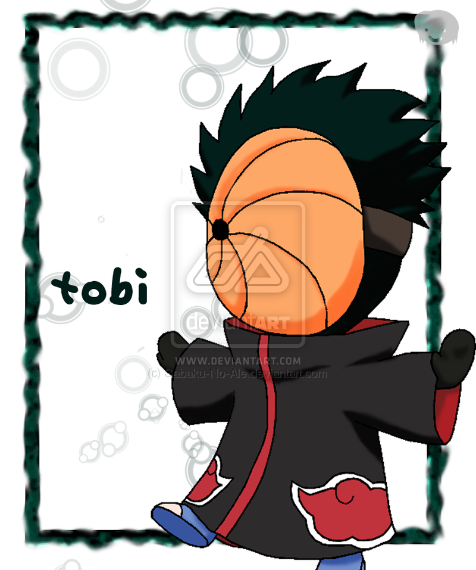

TOBI
Tobi(トビ Tobi?) Tobi memiliki gaya bicara yang resmi dan benar. Walaupun penampilan fisiknya masih menyisahkan misteri, Zetsu secara tidak langsung menyatakan bahwa Tobi masih muda, sementara sisi yang lain dari Zetsu mengatakan bahwa Tobi adalah "anak baik". Tobi sangat menghormati Deidara, dan sering memanggilnya dengan sebutan Deidara-sempai. Kepribadian Tobi agak sedikit ganjil jika dibandingkan dengan anggota Akatsuki yang lain. Sementara anggota yang lain sangat berdedikasi dan serius, meskipun sering terjadi pertentangan pendapat, Tobi lebih santai dan agak konyol seperti Naruto. Kepribadiannya tidak disukai Deidara, yang meyakini bahwa semua Akatsuki seharusnya bersikap serius dan tenang. Tobi tanpa sengaja sering menjengkelkan Deidara yang mengakibatkan Deidara menyerang Tobi dalam sebuah aksi komedi. Di sisi yang lain, Kisame menghargai kemampuan Tobi yang membuat ceria dalam organisasi mereka yang suram..